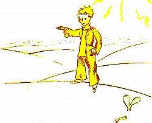

Cuando uno pretende mostrarse ingenioso, a veces se miente un poco. No he sido muy honesto cuando les hablé de los faroleros. Corro el riesgo de dar una falsa idea de nuestro planeta a quienes no lo conocen. Los hombres ocupan muy poco espacio en la tierra. Si los dos mil millones de habitantes que pueblan la tierra se quedaran parados y un poco apretados, como para un mitin, entrarían fácilmente en una plaza pública de veinte millas de largo por veinte millas de ancho. Se podría amontonar a la humanidad en el menor islote del Pacífico.
Los adultos, por supuesto, no les creerán. Ellos se imaginan que ocupan mucho lugar. Se consideran importantes como los baobabs. Aconséjenles entonces hacer el cálculo. Eso les gustará, porque adoran las cifras. Pero no pierdan tiempo en esa penitencia. Es inútil. Ustedes tienen confianza en mí. 
Al principito, una vez en la tierra, le resultó pues muy sorprendente no ver a nadie. Temía ya haberse equivocado de planeta, cuando un anillo color de luna se movió en la arena.
- Buenas noches – dijo al azar el principito.
- Buenas noches –dijo la serpiente.
- Sobre qué planeta caí ? – preguntó el principito.
- Sobre la Tierra, en África – respondió la serpiente.
- Ah!... No hay pues nadie en la Tierra ?
- Éste es el desierto. No hay nadie en los desiertos. La Tierra es grande – dijo la serpiente.
El principito se sentó en una piedra y levantó los ojos hacia el cielo:
- Me pregunto – dijo – si las estrellas están iluminadas para que cada uno pueda algún día encontrar la suya. Mira mi planeta. Está justo encima nuestro. .. pero qué lejos !
- Es hermoso – dijo la serpiente. – Qué vienes a hacer acá ?
- Tengo dificultades con una flor – explicó el principito.
- Ah! - dijo la serpiente.
Y ambos se callaron.
- Dónde están los hombres ? – prosiguió finalmente el principito. - Se está un poco solo en el desierto...
- Se está solo también con los hombres – dijo la serpiente.
El principito la miró largo tiempo:
- Eres un animal muy extraño – le dijo finalmente –, delgado como un dedo...
- Pero soy más poderosa que el dedo de un rey – dijo la serpiente.
El principito sonrió:
- No eres muy poderosa... ni siquiera tienes patas... ni siquiera puedes viajar...
- Puedo llevarte más lejos que un navío – dijo la serpiente.
Se enroscó alrededor del tobillo del principito, como un brazalete de oro:
- A quien toco lo devuelvo a la tierra de donde salió – agregó. – Pero tú eres puro y vienes de una estrella...
El principito no respondió nada.
- Me inspiras compasión, tan débil, en esta Tierra de granito. Puedo ayudarte algún día si echas demasiado de menos tu planeta. Puedo...
- Oh! comprendí perfectamente –dijo el principito – pero por qué hablas siempre con enigmas ?
- Los resuelvo todos – dijo la serpiente.
Y ambos se callaron.
| Chapitre XVI | |
Capítulo XVI |
| Chapitre XVII | Índice | |
| Chapitre XVIII | Capítulo XVIII |